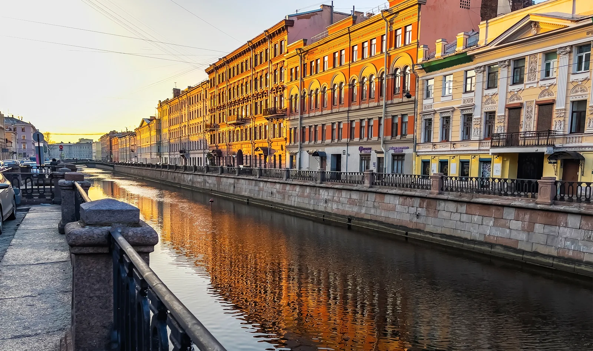
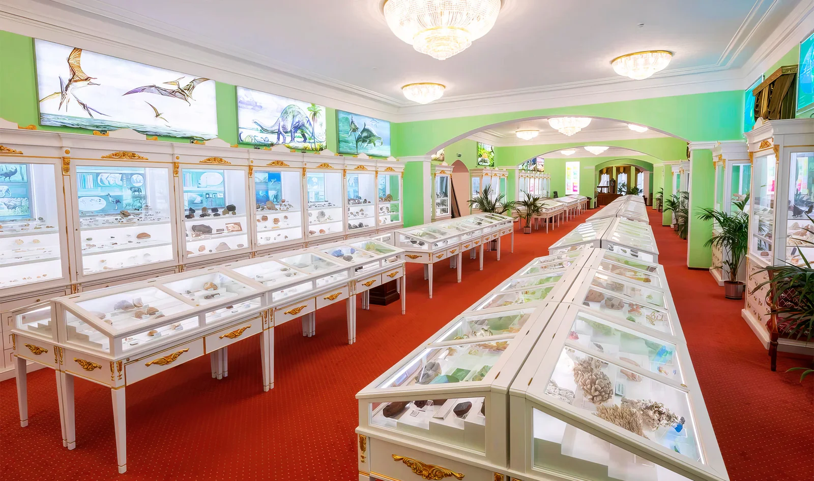
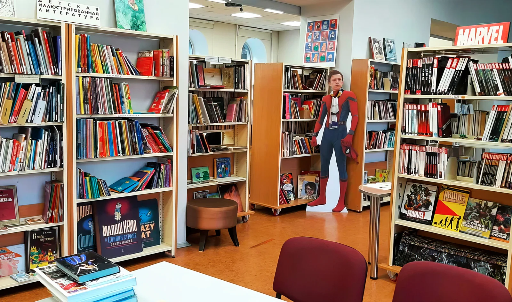
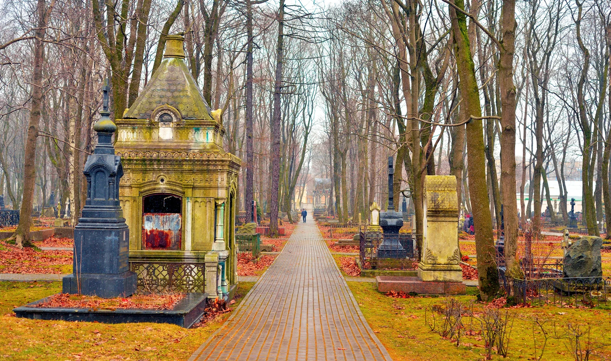

Бесплатный Санкт-Петербург: 11 необычных идей для культурного досуга
Автор: О! Редакция
Идеи культурного досуга без обязательных расходов на входной билет. Подборка для бюджетного путешествия и поиска менее очевидных городских занятий.
Читать полную статью на блоге Островка →



Фото: bellena / Shutterstock.comИсточник изображения

Фото: Театр-студия СПбГУИсточник изображения


Фото: Анастасия Литвинова / Яндекс.КартыИсточник изображения


Фото: Каталогизатор / Яндекс.КартыИсточник изображения


Фото: Chatham172 / Shutterstock.comИсточник изображения